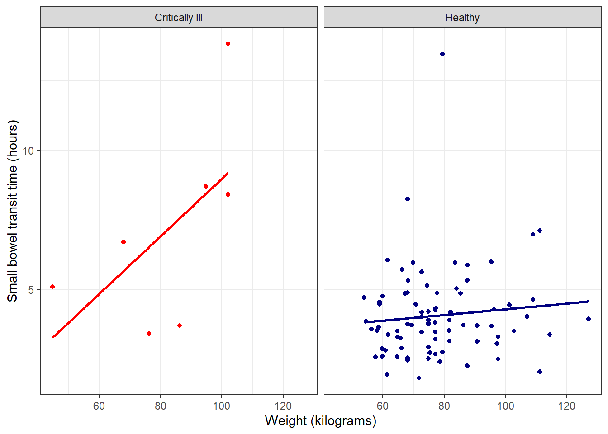
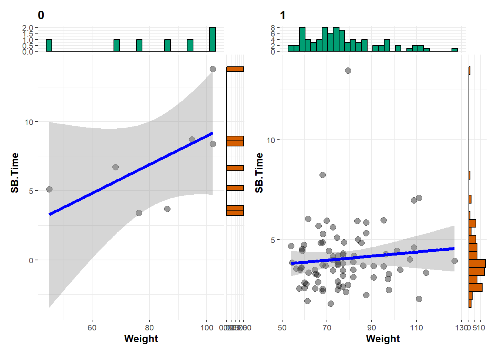
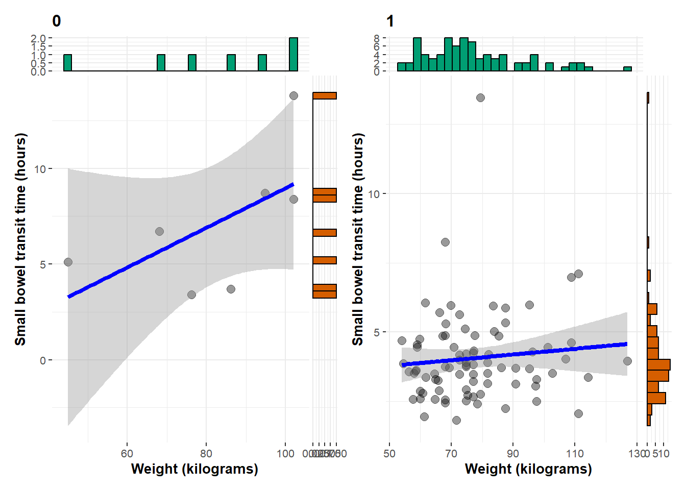

Create Statistical Plots
There a many packages that can be used to add statistical values to ggplot objects. This section will briefly cover two: ggstats and ggstatplot. Which is most suitable will depend on your statistical visualization goals.
Overview of ggstats
The ggstats package is an extension of ggplot2 for plotting statistical result in the style and format of ggplot objects.
library(ggstats)Overview of ggstatplot
The ggstatplot package is an extension of ggplot2 for adding statistical results to ggplot objects.
library(ggstatsplot)You can cite this package as:
Patil, I. (2021). Visualizations with statistical details: The 'ggstatsplot' approach.
Journal of Open Source Software, 6(61), 3167, doi:10.21105/joss.03167Statistics for scatterplots
Returning to the faceted scatterplot from the previous section:
ggplot(data = smartpill, aes(x = Weight, y = SB.Time, color = Group)) +
geom_point() +
labs(x = "Weight (kilograms)", y = "Small bowel transit time (hours)") +
scale_color_manual(values = c("red", "navy"),
breaks = c("0", "1"),
labels = c("Critically Ill", "Healthy"),
name = "Group") +
facet_wrap(~Group,
labeller = as_labeller(c("0" = "Critically Ill", "1" = "Healthy"))) +
theme(legend.position = "none")
Use the grouped_ggscatterstats function:
grouped_ggscatterstats(data = smartpill,
x = Weight,
y = SB.Time,
grouping.var = Group)`stat_xsidebin()` using `bins = 30`. Pick better value `binwidth`.
`stat_ysidebin()` using `bins = 30`. Pick better value `binwidth`.
`stat_xsidebin()` using `bins = 30`. Pick better value `binwidth`.
`stat_ysidebin()` using `bins = 30`. Pick better value `binwidth`.
There is a lot going on under the hood of the output plots. But, if this format is closer than not to your desired output, it is possible to change portions to suit your needs.
Turn off statistical results, but retain plot:
grouped_ggscatterstats(data = smartpill,
x = Weight,
y = SB.Time,
grouping.var = Group,
#turn off subtitles
results.subtitle = FALSE)`stat_xsidebin()` using `bins = 30`. Pick better value `binwidth`.
`stat_ysidebin()` using `bins = 30`. Pick better value `binwidth`.
`stat_xsidebin()` using `bins = 30`. Pick better value `binwidth`.
`stat_ysidebin()` using `bins = 30`. Pick better value `binwidth`.
Can use ggplot options through ‘ggplot.component’ to further customize output:
grouped_ggscatterstats(data = smartpill,
x = Weight,
y = SB.Time,
grouping.var = Group,
#turn off subtitles
results.subtitle = FALSE,
ggplot.component = labs(x = "Weight (kilograms)", y = "Small bowel transit time (hours)"))`stat_xsidebin()` using `bins = 30`. Pick better value `binwidth`.
`stat_ysidebin()` using `bins = 30`. Pick better value `binwidth`.
`stat_xsidebin()` using `bins = 30`. Pick better value `binwidth`.
`stat_ysidebin()` using `bins = 30`. Pick better value `binwidth`.
Extract just the statistical results (default stats used, can be changed if needed);
output2 <- grouped_ggscatterstats(data = smartpill,
x = Weight,
y = SB.Time,
grouping.var = Group)
extract_stats(output2)[[1]]
$subtitle_data
# A tibble: 1 × 14
parameter1 parameter2 effectsize estimate conf.level conf.low
<chr> <chr> <chr> <dbl> <dbl> <dbl>
1 Weight SB.Time Pearson correlation 0.594 0.95 -0.288
conf.high statistic df.error p.value method n.obs conf.method
<dbl> <dbl> <int> <dbl> <chr> <int> <chr>
1 0.931 1.65 5 0.160 Pearson correlation 7 normal
expression
<list>
1 <language>
$caption_data
# A tibble: 1 × 17
parameter1 parameter2 effectsize estimate conf.level
<chr> <chr> <chr> <dbl> <dbl>
1 Weight SB.Time Bayesian Pearson correlation 0.407 0.95
conf.low conf.high pd rope.percentage prior.distribution prior.location
<dbl> <dbl> <dbl> <dbl> <chr> <dbl>
1 -0.188 0.877 0.872 0.116 beta 1.41
prior.scale bf10 method n.obs conf.method expression
<dbl> <dbl> <chr> <int> <chr> <list>
1 1.41 1.16 Bayesian Pearson correlation 7 HDI <language>
$pairwise_comparisons_data
NULL
$descriptive_data
NULL
$one_sample_data
NULL
$tidy_data
NULL
$glance_data
NULL
attr(,"class")
[1] "ggstatsplot_stats" "list"
[[2]]
$subtitle_data
# A tibble: 1 × 14
parameter1 parameter2 effectsize estimate conf.level conf.low
<chr> <chr> <chr> <dbl> <dbl> <dbl>
1 Weight SB.Time Pearson correlation 0.102 0.95 -0.117
conf.high statistic df.error p.value method n.obs conf.method
<dbl> <dbl> <int> <dbl> <chr> <int> <chr>
1 0.310 0.919 81 0.361 Pearson correlation 83 normal
expression
<list>
1 <language>
$caption_data
# A tibble: 1 × 17
parameter1 parameter2 effectsize estimate conf.level
<chr> <chr> <chr> <dbl> <dbl>
1 Weight SB.Time Bayesian Pearson correlation 0.100 0.95
conf.low conf.high pd rope.percentage prior.distribution prior.location
<dbl> <dbl> <dbl> <dbl> <chr> <dbl>
1 -0.104 0.304 0.824 0.468 beta 1.41
prior.scale bf10 method n.obs conf.method expression
<dbl> <dbl> <chr> <int> <chr> <list>
1 1.41 0.252 Bayesian Pearson correlation 83 HDI <language>
$pairwise_comparisons_data
NULL
$descriptive_data
NULL
$one_sample_data
NULL
$tidy_data
NULL
$glance_data
NULL
attr(,"class")
[1] "ggstatsplot_stats" "list" Additional resources
- ggstats website
- ggstatsplot website with vignettes for included functions